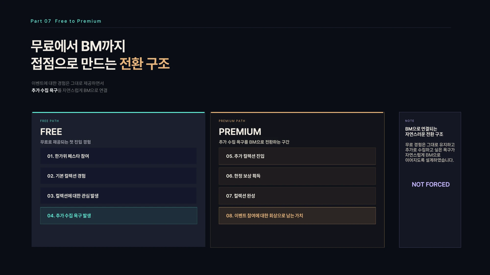
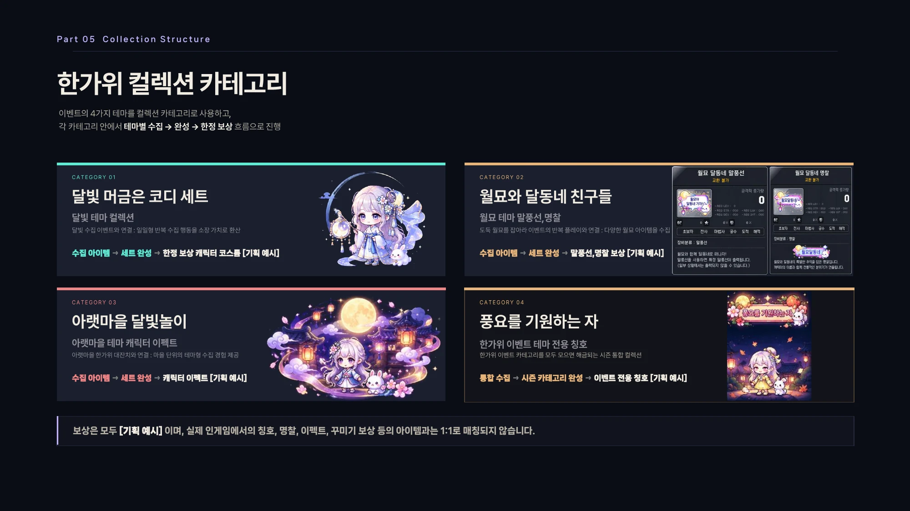
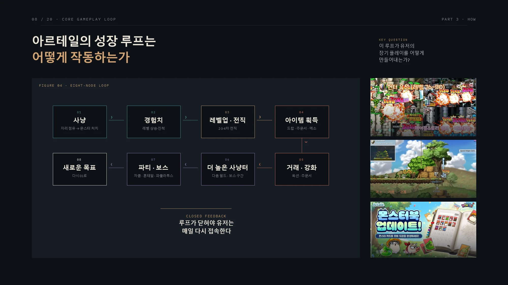
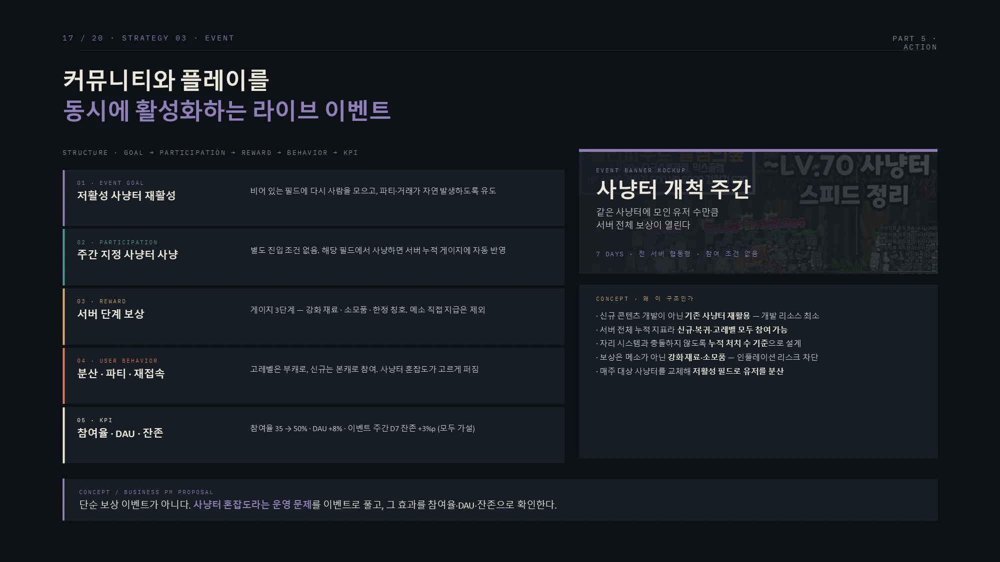

Business Thinking + BM Planning
Business PM / BM
실제 서비스·사업 업무와 사용자 경험에서 출발한 BM 기획 제안.
실제 업무 경험
TALES RUNNER
Business / Service PM
사업 기획에서 보는 순서
상품보다 먼저 구매할 이유를 봅니다.
사용자가 어떤 경험을 원하는지, 무엇을 유료 선택지로 제안할 수 있는지 검토합니다.
가격은 상품이 제공할 가치와 구매 전후의 흐름을 정리한 뒤 살펴봅니다.
- 사용자와 기회
- 누가 어떤 상황에서 사용하는가?
어떤 경험이 부족한가? - 가치와 BM
- 무엇을 얻는가?
기존 경험을 해치지 않고 어디에 구매 선택지를 둘 것인가? - 상품과 가격
- 상품별 역할과 구매 이유가 다른가?
구성에 맞는 가격인지 확인할 근거가 있는가? - 여정과 검증
- 발견·구매·사용이 어떻게 이어지는가?
실제 적용 후 무엇을 확인해야 하는가?
무료 경험 뒤에 놓는 구매 선택
- 이벤트 참여한가위 페스타 진입
- 무료 경험컬렉션 가치 경험
- 수집 관심완성하고 싶은 이유
- 선택적 구매컬렉션 확장
- 완성과 보상한정 보상으로 연결
기획 제안의 사용자 여정입니다.
실제 이용 행동이나 출시 상품을 뜻하지 않습니다.
구매 전에 경험을 제공합니다.
상품만 먼저 제시하는 대신 이벤트 참여와 수집 경험을 연결합니다.
상품 구성과 보상 가치, 상품 간 역할 차이는 컬렉션 완성이라는 목적에 맞춰 검토합니다.

이미지를 클릭하면 크게 볼 수 있습니다.테마별 수집과 상품 역할
달빛 머금은 코디 세트, 월묘와 달동네 친구들, 아랫마을 달빛놀이, 풍요를 기원하는 자를 컬렉션 카테고리로 제안했습니다.
코디·말풍선·명찰·이펙트·칭호를 테마별로 묶고, 수집 진행도와 완성 보상을 연결한 구성입니다.
- BASIC · 첫 구매
- 기본 컬렉션 보상과 카테고리 확장 슬롯으로 첫 유료 선택지를 구성했습니다.
- PREMIUM · 수집 범위 확대
- BASIC 구성에 카테고리 확장과 시즌 한정 보상을 더하는 안입니다.
- COLLECTION+ · 전체 수집
- 전체 카테고리 해금과 통합 시즌 칭호를 포함하는 상위 구성안입니다.
상품명·보상·해금 범위는 기획 예시입니다.
실제 판매 상품이나 구현 기능은 아닙니다.

이미지를 클릭하면 크게 볼 수 있습니다.구매와 참여를 함께 확인하는 검증안
이벤트 참여율과 컬렉션 진입·완성률을 먼저 보고, 상품 노출 대비 구매 전환율과 결제자당 평균 결제액을 함께 비교하는 안입니다.
이벤트 종료 후 재방문율도 확인 항목에 포함했습니다.
가격 비교 실험에서는 구매율만으로 판단하지 않고, 컬렉션 완성과 이벤트 참여가 함께 유지되는지 확인하도록 제안했습니다.
자료의 매출 계산은 가정에 따른 시뮬레이션이며 실제 성과가 아닙니다.
시즌이 끝난 뒤에도 남는 가치
시즌 종료 후 컬렉션을 도감으로 보관하는 안과 기본 컬렉션을 무료로 유지하는 안을 담았습니다.
기존 캐시 상품과 기능이 겹치는지 확인하고, 다음 시즌에는 카테고리의 테마를 바꿔 활용하는 방향도 검토했습니다.
이용자별로 다른 확인 항목
신규·복귀·일반·하드코어 이용자를 나눠 목표와 어려움을 가설로 정리했습니다.
초기 성장에서는 다음 사냥터와 장비 교체 시점, 복귀 과정에서는 달라진 서비스에 다시 적응하는 과정을 검토했습니다.
이용자 구분과 어려움은 분석 가설입니다.
실제 이용자 조사나 내부 잔존율로 확인한 결과는 아닙니다.

이미지를 클릭하면 크게 볼 수 있습니다.안내·상품·이벤트를 나눠 제안합니다.
성장 가이드와 단계 미션
추천 사냥터와 단계별 목표를 안내하는 패널을 제안했습니다.
첫 사냥터까지 걸리는 시간과 미션 완료, 이후 재접속을 확인하는 구성입니다.
귀환자 성장 패스
복귀 직후가 아닌 적응 이후에 제시하는 14일 미션형 패스입니다.
사냥·보스·거래 미션과 단계별 보상을 묶고, 구매 전환과 복귀 이후 참여를 함께 확인하는 안입니다.
실제 판매 상품이 아닌 제안입니다.
보호권 등 보상 구성은 기존 상품과의 중복, 성장·거래에 미칠 영향을 추가 검토해야 합니다.
사냥터 개척 주간
기존 사냥터의 누적 처치 수로 서버 공동 목표를 채우는 협동 이벤트를 제안했습니다.
메소 직접 지급 대신 강화 재료와 소모품을 보상 후보로 두고, 참여율과 사냥터 분산을 확인하는 안입니다.

이미지를 클릭하면 크게 볼 수 있습니다.이미지의 참여율·DAU·잔존율 수치는 검증을 위한 가설 목표이며 실제 운영 성과가 아닙니다.
성장 안내가 도움이 되는지 먼저 검증합니다.
기존 온보딩을 유지하는 집단과 성장 가이드를 보여주는 집단을 비교하는 실험안을 담았습니다.
D7 재접속률을 주요 확인 지표로 두고, 첫 사냥터 도달 시간과 플레이 시간, 이탈 관련 문의를 함께 살펴보도록 제안했습니다.
확인 결과에 따라 적용 범위를 넓히거나 미션과 노출 시점을 조정하고, 도움이 되지 않으면 되돌리는 기준을 정리했습니다.
실험을 수행하거나 개선 효과를 확인한 자료는 아닙니다.
공개 정보에 기반한 포트폴리오 분석·기획 제안입니다.
자료의 VOC 빈도와 KPI 목표값은 가설이며, 실제 서비스 지표나 재직 성과로 제시하지 않습니다.
출발점이 다르면 구매 이유도 달라집니다.
- MapleStar
- 이벤트 경험 → 컬렉션 확장테마와 수집, 완성 경험을 구매 선택으로 연결
- Artale
- 성장·복귀 경험 → 안내·상품·이벤트 제안성장 가이드와 복귀 패스, 협동 이벤트의 검증 항목 정리
Business PM Perspective
어떤 경험에 구매 선택지를 둘 것인가
테일즈런너에서는 운영 대응안과 행사 초안을 다뤘습니다.
두 BM 기획에서는 사용자가 얻는 것과 구매 전후의 이용 흐름을 먼저 검토합니다.
상품과 가격은 그 이유를 설명할 수 있을 때 구체화합니다.